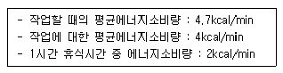
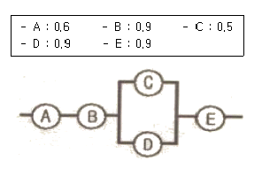
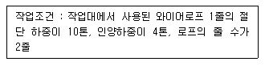
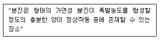

산업안전산업기사 (2009-05-10 기출문제)
1과목: 산업안전관리론
1. 국제노동기구(ILO)의 분류에 부상결과 신체장해등급 제4급~제14급에 해당한 상해로 옳은 것은?
- 영구 전노동 불능상해
- 일시 전노동 불능상해
- 영구 일부노동 불능상해
- 일시 일부노동 불능상해
(정답률: 52%)

2. 다음 중 자율안전확인대상 보안경의 사용구분에 따른 종류에 해당하지 않는 것은?
- 유리보안경
- 자외선용보안경
- 프라스틱보안경
- 도수렌즈보안경
(정답률: 64%)
3. 다음 중 산업안전보건법령상 안전관리자를 증원하거나, 개입을 해야 하는 경우가 아닌 것은?
- 당해 사업장의 연간재해율이 동종업종 평균재해율의 3배인 경우
- 작업환경불량, 화재 · 폭발 또는 누출사고 등으로 사회적 물의를 일으킨 경우
- 중대재해가 연간 3건 발생한 경우
- 안전관리자가 질병의 이유로 6개월 동안 직무를 수행할 수 없게 된 경우
(정답률: 52%)
4. 다음 중 적응기제(Adjustment Mechanism)의 유형에서 “동일화(identifion)"의 사례에 해당하는 것은?
- 운동시합에 진 선수가 컨디션이 좋지 않았다고 한다.
- 결혼에 실패한 사람이 고아들에게 정열을 쏟고 있다.
- 아버지의 성공을 자랑하며 자신의 목에 힘이 들어가 있다.
- 동생이 태어난 후 초등학교에 입학한 큰 아이가 손가락을 빨기 시작했다.
(정답률: 84%)
5. 다음 중 위험예지훈련 기초 4라운드법의 진행에서 ‘위험의 포인트’를 결정하여 전원이 지적확인을 하는 단계로 가장 적절한 것은?
- 제1라운드 : 현상파악
- 제2라운드 : 본질추구
- 제3라운드 : 대책수립
- 제4라운드 : 목표설정
(정답률: 51%)
6. 안전한 작업방법을 알고는 있으나 시행하지 않는 것에 대한 교육으로 옳은 것은?
- 안전지식 교육
- 작업환경 교육
- 안전태도 교육
- 안전기능 교육
(정답률: 87%)
7. 다음 그림에 해당하는 산업안전보건법상 안전 · 보건표지의 종류로 옳은 것은?
- 부식성물질경고
- 산화성물질경고
- 인화성물질경고
- 폭발성물질경고
(정답률: 86%)
8. 다음 중 라인-스텝(line-staff) 조직의 단점으로 볼 수 없는 것은?
- 권한의 분쟁이나 조정으로 인해 시간과 노력이 소모될 수 있다.
- 명령계통과 조언 · 권고적 참여가 혼동되기 쉽다.
- 스텝의 월권행위가 발생하는 경우가 있다.
- 라인이 스텝에 의존 또는 활용하지 않는 경우가 있다.
(정답률: 47%)
9. 다음 중 교육방법의 4단계를 올바르게 나열한 것은?
- 제시→도입→적용→확인
- 확인→도입→제시→적용
- 도입→확인→적용→제시
- 도입→제시→적용→확인
(정답률: 69%)
10. 평균 근로자수가 50명인 A 공장에서 지난 한 해동안 3명의 재해자가 발생하였다. 이 공장의 강도율이 1.5이었다면 총근로손실일수는 몇 일인가? (단, 근로자는 1일 8시간씩 연간 300일을 근무하였다.)
- 180
- 190
- 208
- 219
(정답률: 48%)
11. 다음 중 재해의 원인과 결과를 연계하여 상호 관계를 파악하기 위하여 도표화하는 분석방법은?
- 파레토도
- 특성요인도
- 크로스분류도
- 관리도
(정답률: 68%)
12. 다음과 같은 [조건]의 작업에 있어 1시간의 총작업시간 내에 포함시켜야 하는 휴식시간은 약 얼마인가?

- 7.23분
- 10.11분
- 13.13분
- 15.56분
(정답률: 34%)
13. 다음 중 교육의 3대 요소가 아닌 것은?
- 평가
- 강사
- 피교육자
- 교육자료
(정답률: 83%)
14. 다음 중 안전관리에 있어 관리사이클(PDCA)에 해당하지 않는 것은?
- 계획(Plan)
- 실시(Do)
- 검토(Check)
- 분석(Analysis)
(정답률: 66%)
15. 산업안전보건법상 사업내 안전 · 보건교육 중 근로자 정기 안전 · 보건교육의 내용이 아닌 것은?
- 산업재해 사례에 관한 사항
- 직업성 질환 예방에 관한 사항
- 보호구 및 안전장치 취급과 사용에 관한 사항
- 기계 · 기구 또는 설비의 안전 · 보건점검에 관한 사항
(정답률: 63%)
16. 단조로운 업무가 장시간 지속될 때 작업자의 감각기능 및 판단능력이 둔화 또는 마비되는 경우의 의식수준은?
- phase 0
- phase Ⅰ
- phase Ⅱ
- phase Ⅲ
(정답률: 61%)
17. 다음 중 무재해 운동의 이념 3원칙에 해당하지 않는 것은?
- 무의 원칙
- 자주활동의 원칙
- 참가의 원칙
- 선취 해결의 원칙
(정답률: 81%)
18. 다음 중 Off.J.T(Off the Job Training)의 특징이 아닌 것은?
- 전문가를 초빙하여 강사로 활용이 가능하다.
- 교육생 간에 많은 지식과 경험을 교류할 수 있다.
- 다수의 교육생에게 조직적 훈련이 가능하다.
- 직장의 실정에 맞는 실질적 훈련이 가능하다.
(정답률: 73%)
19. 인간의 행동에 대한 레윈(K. Lewin)의 식 “B=⨍(P·E)"에서 ‘인간관계’요인을 나타내는 변수에 해당하는 것은?
- B(Behavior)
- ⨍(Function)
- P(Person)
- E(Environment)
(정답률: 81%)
20. 다음 중 기억과 망각에 관한 내용으로 틀린 것은?
- 학습된 내용은 학습 직후의 망각률이 가장 낮다.
- 의미없는 내용은 의미있는 내용보다 빨리 망각한다.
- 사고력을 요하는 내용이 단순한 지식보다 기억, 파지의 효과가 높다.
- 연습은 학습한 직후에 시키는 것이 효과가 있다.
(정답률: 76%)
2과목: 인간공학 및 시스템안전공학
21. 시스템 안전해석 방법 중 고장이 직접 시스템의 손실과 인명의 사상에 연결되는 높은 위험도를 가진 요소나 고장의 형태에 따른 분석법은?
- CA
- ETA
- PHA
- FMEA
(정답률: 44%)
22. 다음 중 조도에 관한 설명으로 틀린 것은?
- 어떤 물체나 표면에 도달하는 광의 밀도를 말한다.
- 1[fc] 란 1촉광의 점광원으로부터 1 foot 떨어진 곡면에 비추는 광의 밀도를 말한다.
- 1[lux] 란 1촉광의 점광원으로부터 1m 떨어진 곡면에 비추는 광의 밀도를 말한다.
- 조도는 거리에 비례하고, 광도에 반비례한다.
(정답률: 78%)
23. 다음 중 불대수의 관계식으로 옳은 것은?
- A(A·B) = B
- A+B = A·B
- A+A·B = A·B
- (A+B)(A+C) = A+B·C
(정답률: 79%)
24. 다음 중 암호체계 사용상의 일반적인 지침에 해당하지 않는 것은?
- 암호의 검출성
- 부호의 양립성
- 암호의 표준화
- 암호의 단일 차원화
(정답률: 69%)
25. 신체 부위의 운동 중 몸의 중심선으로 이동하는 운동을 무엇이라 하는가?
- 굴곡 운동
- 내전 운동
- 신전 운동
- 외전 운동
(정답률: 70%)
26. 다음 중 FT도에서 컷셋(cut set)에 대한 설명으로 틀린 것은?
- 시스템의 약점을 표현한 것이다.
- 정상 사상(Top eevent)을 발생시키는 조합이다.
- 시스템이 고장나지 않도록 하는 사상의 조합이다.
- 일반적으로 Fussell Algorithm을 이용한다.
(정답률: 63%)
27. 일반적으로 연구 조사에 사용되는 기준 중 기준척도의 신뢰성이 의미하는 것으로 옳은 것은?
- 보편성
- 적절성
- 반복성
- 객관성
(정답률: 60%)
28. FT(Fault Tree)도를 작성할 때 일반적으로 최하단에 사용되지 않는 사상은?
- 결함사상
- 통상사상
- 기본사상
- 생략사상
(정답률: 43%)
29. [그림]과 같은 시스템에서 각 부품의 신뢰도가 다음과 같을 때 전체 시스템의 신뢰도는 약 얼마인가?

- 0.4104
- 0.4617
- 0.6314
- 0.6804
(정답률: 71%)
30. 어떤 전자기기의 수명은 지수분포를 따르며, 그 평균 수 1000시간이라고 할 때 500시간동안 고장없이 작동할 확률은 약 얼마인가?
- 0.1353
- 0.3935
- 0.6065
- 0.8647
(정답률: 52%)
31. 다음 중 누적손상장애(CTDs)의 원인으로 거리가 먼 것은?
- 진동공구의 사용
- 과도한 힘의 사용
- 높은 장소에서의 작업
- 부적절한 자세에서의 작업
(정답률: 87%)
32. 단일 차원의 시각적 암호 중 구성암호, 영문자암호, 숫자암호에 대하여 암호로서의 성능이 가장 좋은 것부터 배열한 것은?
- 숫자암호 - 영문자암호 - 구성암호
- 영문자암호 - 숫자암호 - 구성암호
- 영문자암호 - 구성암호 - 숫자암호
- 구성암호 - 숫자암호 - 영문자암호
(정답률: 72%)
33. 평균고장시간(MTTF)이 6×105시간의 요소 2개가 직렬계를 이루었을 때의 계(system)의 수명은?
- 2 × 105시간
- 3 × 105시간
- 9 × 105시간
- 18 × 105시간
(정답률: 74%)
34. 다음 중 실효온도(ET)의 결정요소가 아닌 것은?
- 복사
- 온도
- 습도
- 대류
(정답률: 61%)
35. 고장형태 및 영향분석(FMEA: Failure Mode and Effect Analysis)에서 평가요소에 해당되지 않는 것은?
- C1: 기능적 고장 영향의 중요도
- C2: 영향을 미치는 시스템의 범위
- C3: 고장발생의 빈도
- C4: 고장의 영향 크기
(정답률: 47%)
36. 다음 중 통제표시비를 설계할 때 고려해야 할 5가지 요소가 아닌 것은?
- 조작시간
- 공차
- 목측거리
- 일치성
(정답률: 60%)
37. 일반적인 인간-기계 시스템의 형태 중 인간이 사용자나 동력원으로 기능하는 것은?
- 기계화체계
- 수동체계
- 자동체계
- 반자동체계
(정답률: 74%)
38. 다음 중 부품배치의 원칙에 해당되지 않는 것은?
- 중요성의 원칙
- 사용빈도의 원칙
- 다각능률의 원칙
- 기능별 배치원칙
(정답률: 81%)
39. 화학설비에 대한 안전성 평가 5단계 중 ‘정성적 평가’의 실시 단계는?
- 제1단계
- 제2단계
- 제3단계
- 제4단계
(정답률: 74%)
40. 정보입력에 사용되는 표시장치 중 청각장치보다 시각장치를 사용하는 것이 더 유리한 경우는?
- 정보의 내용이 긴 경우
- 수신자가 직무상 자주 이동하는 경우
- 정보의 내용이 즉각적인 행동을 요구하는 경우
- 정보를 나중에 다시 확인하지 않아도 되는 경우
(정답률: 75%)
3과목: 기계위험방지기술
41. 보일러에서 증기의 순도를 저하시킴으로써 응축수가 생겨 워터해머의 원인이 되는 것은?
- 캐리오버
- 포밍
- 프라이밍
- 역화
(정답률: 62%)
42. 드릴 작업의 안전 대책과 거리가 먼 것은?
- 칩은 와이어 브러쉬로 제거한다.
- 구멍 끝 작업에서는 절삭압력을 주어서는 안된다.
- 칩에 의한 자상을 방지하기 위해 장갑을 착용한다.
- 바이스 등을 사용하여 작업 중 공작물의 유동을 방지한다.
(정답률: 86%)
43. "사업주는 가스용기가 발생기와 분리되어 있는 아세틸렌 용접장치에 대하여는 발생기와 가스용기 사이에 (괄호)을(를) 설치하여야 한다"에서 다음 괄호안에 들어갈 용어로 알맞은 것은?
- 격납실
- 안전기
- 안전밸브
- 소화설비
(정답률: 75%)
44. 보일러의 압력방출장치가 2개 있을 때 작동되는 압력은 각각 언제이어야 하는가?
- 상용압력 이하, 최고사용압력 이하
- 최고사용압력 이하, 최고사용압력의 1.⑤배 이하
- 최고사용압력 이하, 최고사용압력의 1.3배 이하
- 최고사용압력 1.03배 이하, 최고사용압력의 1.5배 이하
(정답률: 83%)
45. 기계설비의 안전화 중 기능의 안전화에 해당되는 것은?
- 위험부위 덮개 설치
- 전압 강하시 기계의 자동정지
- 안전율의 확보
- 기계 외관에 안전 색채 사용
(정답률: 74%)
46. 선반의 안전장치가 아닌 것은?
- 칩 브레이크
- 급브레이크
- 칩비산방지 투명판
- 안전블록
(정답률: 73%)
47. 탁상용 연삭기에서 연삭숫돌과 작업받침대와의 간격으로 적절한 것은?
- 1 ~ 3 mm
- 3 ~ 5 mm
- 5 ~ 8 mm
- 10 mm 이상
(정답률: 62%)
48. 가스집합용접장치에서 가스장치실을 설치할 때 유의사항으로 틀린 것은?
- 가스가 누출될 때에는 당해 가스가 정체되지 않도록 한다.
- 지붕 및 천장은 콘크리트 등의 재료로 폭발을 대비하여 견고히 한다.
- 벽에는 불연성 재료를 사용한다.
- 가스장치실에는 관계근로자 외의 자의 출입을 금지시킨다.
(정답률: 75%)
49. 지게차로 20 km/hr의 속력으로 주행할 때 좌우안정도는 몇 % 이내이어야 하는가?
- 37%
- 39%
- 40%
- 42%
(정답률: 71%)
50. 리프트(life)의 방호장치로 가장 적당한 것은?
- 역화방지장치
- 권과방지장치
- 반발방지장치
- 압력방출장치
(정답률: 74%)
51. 산업안전기준에 관한 규칙에서 타워크레인의 운전작업을 중지시켜야 되는 순간풍속의 기준은?(관련 규정 개정전 문제로 기존 정답은 2번입니다. 여기서는 2번을 누르면 정답 처리 됩니다. 자세한 내용은 해설을 참고하세요.)
- 매초당 10m를 초과하는 경우
- 매초당 20m를 초과하는 경우
- 매초당 30m를 초과하는 경우
- 매초당 35m를 초과하는 경우
(정답률: 66%)
52. 왕복운동을 하는 운동부와 고정부 사이에서 형성되는 위험점인 협착점(squeeze point)이 형성되는 기계로 거리가 먼 것은?
- 프레스
- 조형기
- 연삭기
- 성형기
(정답률: 65%)
53. 아세틸렌 용접장치를 사용하여 가열작업을 할 때 게이지 압력은 매제곱센티미터당 얼마를 초과하면 안되는가?
- 2.0 킬로그램
- 1.5 킬로그램
- 1.4 킬로그램
- 1.3 킬로그램
(정답률: 53%)
54. 다음과 같은 작업 조건일 경우 와이어로프의 안전율은?

- 2
- 3
- 4
- 5
(정답률: 78%)
55. 산업안전기준에 관한 규칙에 따른 작업장의 안전기준에 대한 설명으로 옳지 않은 것은?
- 작업장 비상구의 문을 피난방향으로 열리도록 할 것
- 작업장의 통로는 90럭스(lux) 이상의 채광 또는 조명시설을 할 것
- 작업장의 옥내통로는 통로면으로부터 높이 2m 이내에는 장애물이 없도록 할 것
- 작업장의 연면적이 400m2 이상이거나 상시 50인 이상의 근로자가 작업하는 옥내작업장에는 경보용 설비 또는 기구를 설치할 것
(정답률: 82%)
56. 산업안전기분에 관한 규칙에 따른 프레스 등을 사용하여 작업할 때 작업시작 전의 점검사항에 해당하지 않는 것은?
- 클러치 및 브레이크의 기능
- 1행동 1정지기구 · 급정지장치 및 비상정지장치의 기능
- 프레스의 금형 및 고정볼트 상태
- 이상음 및 진동 상태
(정답률: 70%)
57. 연삭기 작업 시 안전기준에 관한 설명으로 옳은 것은?
- 무부하 시운전은 작업 시작 전 1분이상, 연삭 숫돌 교체 후 5분 이상 실시한다.
- 평형 플랜지는 숫돌지름 1/2 이상의 것으로 숫돌바퀴에 균일하게 밀착시킨다.
- 모든 연삭숫돌에 대해서 해당부위에 덮개를 설치하여야 한다.
- 탁상용 연삭기로 연삭 시 작업대와 숫돌바퀴 틈새는 3mm 이하로 한다.
(정답률: 59%)
58. 로울러기의 맞물림 점에서 설치하는 가드의 개구부 간격을 구하는 식으로 맞는 것은? [단, Y:가드 개구부 간격(안전간극mm), X:개구부와 위험점 간의 최단거리(mm)이며 X < 160 mm 이다.]
- X = 5 + 0.1Y
- X = 6 + 0.15Y
- Y = 6 + 0.15X
- Y = 5 + 0.1X
(정답률: 76%)
59. 압력용기에 설치하여야 할 안전장치인 것은?
- 압력방출장치
- 완충장치
- 고저수위조절장치
- 비상정지장치
(정답률: 79%)
60. 프레스 작업에서 가장 재해를 많이 입는 신체부위는?
- 손
- 발
- 팔
- 다리
(정답률: 87%)
4과목: 전기 및 화학설비위험방지기술
61. 다음 중 유해 · 위험설비의 설치 · 이전시 공정안전보고서의 제출시기로 옳은 것은?
- 공사완료 전까지
- 공사 후 시운전 익일까지
- 공사의 착공일 30일전까지
- 설비 가동 후 30일내에
(정답률: 77%)
62. 누전으로 인해 목재 등이 탄화되고 지속적으로 열이 발생, 이로 인하여 화재가 발생하는 것을 무엇이라 하는가?
- 가네하라현상
- 톰슨효과
- flash현상
- 제벡효과
(정답률: 55%)
63. 부탄의 공기 중 연소하한값 1.6vol% 일 경우, 연소에 필요한 최소산소농도는 약 몇 vol% 인가?
- 9.4
- 10.4
- 11.4
- 12.4
(정답률: 57%)
64. 가열 · 마찰 · 충격 또는 다른 화학물질과 접촉 등으로 인하여 산소나 산화제의 공급이 없더라도 폭발 등 격렬한 반응을 일으킬 수 있는 물질은?
- 알코올류
- 무기과산화물
- 니트로화합물
- 과망간산칼륨
(정답률: 76%)
65. 다음 중 노출기준이 가장 낮은 물질은?
- 불소
- 아세톤
- 니트로벤젠
- 사염화탄소
(정답률: 63%)
66. 다음 중 폭발범위에 대한 설명으로 옳은 것은?
- 가연성 가스와 공기와의 혼합가스에 점화원을 주었을 때 폭발이 일어나는 혼합가스의 농도범위
- 가연성 액체의 액면 근방에 생기는 증기가 착화할 수 있는 온도범위
- 공기밀도에 대한 폭발성가스 및 증기의 폭발가능 밀도범위
- 폭발화염이 내부에서 외부로 전파될 수 있는 용기의 틈새간격범위
(정답률: 74%)
67. 다음 중 화재의 급수와 종류 및 종류별 표시색상이 잘못 연결된 것은?
- A급 - 일반화재 - 적색
- B급 - 유류화재 - 황색
- C급 - 전기화재 - 청색
- D급 - 금속화재 - 무색
(정답률: 58%)
68. 다음 중 근로자가 활선작업용 기구를 사용하여 작업할 경우 근로자의 신체 등과 충전전로 사이의 사용전압별 접근한계거리가 서로 잘못 연결된 것은?(관련 규정 개정전 문제로 정답은 1번입니다. 변경된 규정은 해설 내용을 참고하세요.)
- 22kV 초과 33kV 이하 : 50㎝
- 77kV 초과 110kV 이하 : 90㎝
- 154kV 초과 187kV 이하 : 140㎝
- 220kV 초과 : 220㎝
(정답률: 64%)
69. 산업안전보건법상 폭발위험장소의 분류에 있어 다음 내용에 해당하는 장소는?

- 0종 장소
- 1종 장소
- 20종 장소
- 21종 장소
(정답률: 47%)
70. 다음 중 관로의 크기를 변경하고자 할 때 사용하는 관부속품은?
- 밸브(valve)
- 엘보우(elbow)
- 부싱(bushing)
- 플랜지(flange)
(정답률: 64%)
71. 액체의 표면에서 발생한 증기농도가 공기 중에서 연소하한농도가 될 수 있는 가장 낮은 액체온도를 의미하는 것은?
- 착화점
- 발화점
- 인화점
- 연소점
(정답률: 43%)
72. 인체의 전격시의 통전시간이 4초이었다고 했을 때 심실세동전류의 크기는 약 몇 mA 인가?
- 42
- 83
- 165
- 185
(정답률: 62%)
73. 다음 중 폭발의 종류와 해당하는 물질의 연결이 잘못된 것은?
- 산화폭발 - LPG
- 중합폭발 - 산화에틸렌
- 분해폭발 - 아세틸렌
- 분진폭발 - 하이드라진
(정답률: 49%)
74. 콘덴서의 단자전압이 1kV, 정전용량이 740pF 일 경우 방전 에너지는 약 몇 mJ 인가?
- 370
- 37
- 3.7
- 0.37
(정답률: 49%)
75. 다음 중 연소의 3요소에 해당하는 물질이 아닌 것은?
- 메탄
- 공기
- 정전기 방전
- 이산화탄소
(정답률: 68%)
76. 정전기 방전의 종류 중 공기 중에 놓여진 절연체 표면의 전계강도가 큰 경우 고체 표면을 따라 진행하는 방전을 무엇이라 하는가?
- 코로나 방전
- 연면 방전
- 스트리머 방전
- 불꽃 방전
(정답률: 51%)
77. 다음 중 정전기 재해의 방지 대책으로 적절하지 않은 것은?
- 접지를 실시한다.
- 단로기를 설치한다.
- 가습을 한다.
- 제전기를 사용한다.
(정답률: 66%)
78. 다음 중 물 속에 저장이 가능한 물질은?
- 칼륨
- 황린
- 인화칼슘
- 탄화알루미늄
(정답률: 87%)
79. 다음 중 접지공사의 종류에 대한 접지선의 굵기 기준이 올바르게 연결된 것은?
- 제1종 접지공사 - 지름 4mm 이상의 연동선
- 제2종 접지공사 - 지름 1.6mm 이상의 연동선
- 제3종 접지공사 - 지름 4mm 이상의 연동선
- 특별 제3종 접지공사 - 지름 2.5mm 이상의 연동선
(정답률: 61%)
80. 다음 중 누전에 의한 감점위험을 방지하기 위하여 누전 차단기를 설치하여야 하는데 다음 중 차단기를 설치하지 않아도 되는 것은?
- 절연대 위에서 사용하는 이중 절연구조의 전동기기
- 물과 같이 도전성이 높은 액체에 의한 습윤 장소에 사용하는 이동형 전기기구
- 철판 위와 같이 도전성이 높은 장소에서 사용하는 이동형 전기기구
- 임시배선의 전로가 설치되는 장소에서 사용하는 이동형 전기기구
(정답률: 79%)
5과목: 건설안전기술
81. 추락방지용 안전망의 그물코 크기의 기준으로 옳은 것은?
- 5㎝ 이하
- 10㎝ 이하
- 15㎝ 이하
- 20㎝ 이하
(정답률: 72%)
82. 해체공법에 대한 설명 중 핸드브레이커 공법의 특징을 옳게 설명한 것은?
- 좁은 장소의 작업에 유리하고 타공법과 병행하여 사용할 수 있다.
- 분진 발생이 거의 없어 기타 보호구가 불필요하다.
- 파괴력이 크고 공기단축 및 노동력 절감에 유리하다.
- 소음, 진동은 없으나 기둥과 기초물 해체시에는 사용이 불가능하다.
(정답률: 63%)
83. 안전난간의 구조 및 설치 요건으로 옳지 않은 것은?
- 상부난간대는 바닥면으로부터 높이 90㎝ 이상 120㎝ 이하에 설치할 것
- 발끝막이판은 바닥면 등으로부터 10㎝ 이상의 높이를 유지할 것
- 임의의 지점에서 임의의 방향으로 움직이는 100㎏ 이상의 하중에 견딜 수 있을 것
- 난간대는 지름 1.5㎝ 이상의 금속제 파이프나 그 이상의 강도를 가진 재료를 사용할 것
(정답률: 69%)
84. 방망의 정기시험은 사용개시 후 몇 년 이내에 실시하는가?
- 1년 이내
- 2년 이내
- 3년 이내
- 4년 이내
(정답률: 56%)
85. 차랑계 하역운반기계등을 사용하여 작업을 하는 때에는 작업 지휘자를 지정하여 작업계획에 따라 지휘하도록 하여야 하는데 고소작업대의 경우에는 이 사항이 적용되려면 작업이 몇 m 이상의 높이에서 이루어져야 하는가?
- 5m
- 10m
- 15m
- 20m
(정답률: 62%)
86. 거푸집 동바리 구조검토시 고려해야 할 연직하중에 해당하지 않는 것은?
- 콘크리트 중량
- 작업자 중량
- 적재되는 시공기계 등의 중량
- 풍압
(정답률: 71%)
87. 추락 방지용 방망에 표시해야 할 사항이 아닌 것은?
- 신품인때의 방망의 강도
- 망상의 직경
- 제조자명
- 그물코
(정답률: 34%)
88. 철골구조에서 강풍에 대한 내력이 설계에 고려되었는지 검토를 실시하지 않아도 되는 건물은?
- 높이 30m인 건물
- 단면구조가 일정한 구조물
- 연면적당 철골량이 45kg인 건물
- 이음부가 현장용접인 건물
(정답률: 64%)
89. 다음 중 콘크리트측압에 영향을 미치는 인자로 가장 거리가 먼 것은?
- 슬럼프
- 타설속도
- 대기의 온도 및 습도
- 거푸집의 종류
(정답률: 67%)
90. 함수비 20%, 공극비 0.8, 비중이 2.6인 흙의 포화도는 얼마인가?
- 55%
- 65%
- 75%
- 85%
(정답률: 57%)
91. 산업안전보건관리비 중 안전관리자 등의 인건비 및 각종 업무수당 등의 항목에서 사용할 수 없는 내역은?
- 교통통제를 위한 신호수의 인건비
- 덤프트럭 등 건설기계의 신호자의 인건비
- 건설용 리프트의 운전자의 인건비
- 고소작업대 작업시 하부통제를 위한 신호자의 인건비
(정답률: 76%)
92. 다음 중 양중기에 해당되지 않는 것은?
- 리프트
- 크레인
- 곤돌라
- 항발기
(정답률: 82%)
93. 토사붕괴를 예방하기 위한 굴착면의 기울기 기준으로 옳지 않은 것은?(2021년 11월 19일 개정된 규정 적용됨)
- 암반의 연암 1 : 1.0
- 암반의 풍화함 1: 0.8
- 보통 흙의 건지 1 : 0.5 ~ 1 : 1
- 보통 흙의 습지 1 : 1 ~ 1:1.5
(정답률: 77%)
94. 추락재해를 방지하기 위한 안전대책내용 중 옳지 않은 것은?
- 높이가 2m를 초과하는 장소에는 승강설비를 설치한다.
- 이동식 사다리의 폭은 30㎝ 이상으로 한다.
- 사다리 기둥을 설치할 경우에 기둥과 수평면의 각도는 85도 이상으로 한다.
- 슬레이트 지붕에서 발이 빠지는 등 추락 위험이 있을 경우 폭 30㎝ 이상의 발판을 설치 한다.
(정답률: 77%)
95. 산업안전보건관리비 중 추락방지용 안전설비의 항목에서 사용할 수 있는 내역이 아닌 것은?
- 안전난간
- 작업발판
- 개구부 덮개
- 안전대 걸이설비
(정답률: 45%)
96. 철골구조물의 건립 순서를 계획할 때 일반적인 주의사항으로 옳지 않은 것은?
- 현장건립 순서와 공장제작 순서를 일치시킨다.
- 건립기계의 작업반경과 진행방향을 고려하여 조립수서를 결정한다.
- 건립 중 가볼트 체결기간을 가급적 길게 하여 안정을 기한다.
- 연속기둥 설치시 기둥을 2개 세우면 기둥사이의 보도 동시에 설치하도록 한다.
(정답률: 73%)
97. 철근을 인력으로 운반할 때의 주의사항으로 옳지 않은 것은?
- 긴 철근은 2인 1조가 되어 어깨메기로 하여 운반한다.
- 긴 철근을 부득이 1인이 운반할 때는 철근의 한쪽을 어깨에 메고 다른 한쪽 끝을 땅에 끌면서 운반한다.
- 1인이 1회에 운반할 수 있는 적당한 무게한도는 운반자의 몸무게 정도이다.
- 운반시에는 항상 양끝을 묶어 운반한다.
(정답률: 79%)
98. 사다리식 통로를 설치할 때 사다리의 상단은 걸쳐 놓은 지점으로부터 얼마 이상 올라가도록 하여야 하는가?
- 45㎝ 이상
- 60㎝ 이상
- 75㎝ 이상
- 90㎝ 이상
(정답률: 69%)
99. 앞 뒤 두 개의 차륜이 있으며(2축 2륜) 각각의 차축이 평행으로 배치된 것으로 찰흙, 점성토 등의 두꺼운 흙을 다짐하는 데는 적당하나 단단한 각재를 다지는 데는 부적당한 로드 롤러는?
- 머캐덤 롤러(Macadam Roller)
- 탠덤 롤러(Tandem Roller)
- 탬핑 롤러(Tamping roller)
- 진동 롤러(Vibrating roller)
(정답률: 66%)
100. 날씨 등의 이유로 비계를 변경한 후 해야하는 비계의 점검 사항으로 적절하지 않은 것은?
- 기둥의 침하 · 변형 · 변위 또는 흔들림 상태
- 손잡이의 탈락여부
- 격벽의 설치여부
- 발판재료의 손상여부 및 부착 또는 걸림상태
(정답률: 62%)